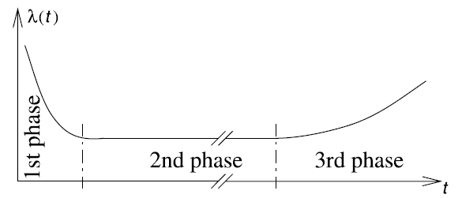
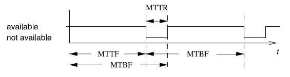

Functional Safety of Embedded Systems - Part 4 - Embedded Systems Software / Evaluation and Validation
- reuse of intellectual property (IP) => saves cost & effort
- embedded operating systems
- middleware (intermediate layer between the OS and application software)
- extend communication
- real time database
- API (of standard components)
Embedded Operating Systems
General Requirements
- very simple systems => does not need OS
- OS => task switching/ dispatching, I/O, scheduling
- Special processors for this may exist.
- systems with virtual memory => distinguish between address spaces, processes, threads,
- Each process has its own address space, whereas several threads may share an address space.
- RT-OS must have:
- communication & synchronization between processes & threads
- must be small
- flexibly tailored towards application
- configurability (object orientation, aspect-oriented programming, conditional compiling, advanced compile-time evaluation, linker-based removal of unused functions)
- peripheral devices
- no hard-disk, no keyboard, no screen, no mouse
- devices => maybe direct handling by application => OS does not take care about this => drivers in "user space"
- connect interrupts to any process => use OS service calls
- => real-time operating systems
Real-Time Operating Systems
"A real-time operating system is an operating system that supports the construction of real-time systems."
- key requirements:
- timing must be predictable
- upper bound must be guaranteed
- scheduling must be deterministic
- interrupts must be possible to disable
- prevent unpredictable disk head movement (if HDD is used)
- manage task scheduling
- OS must be aware of deadlines
- manage time (if internal processing is linked to absolute time in physical environment)
- global clock synchronization
- Universal Time Coordinated (UTC): defined by astronomical standards
- international atomic time (temps atomic internationale TAI)
- networked embedded systems: synchronize via network
- sometimes only provision for precise local delay
- must be fast
- includes OS kernel: manages resources found in every real time operating system
- available RTOS:
- fast proprietary kernels: not for complex systems, tend to be not predictable
- real-time extensions to standard OS: => hybrid systems
- mainstream operating systems
- RT-kernel for RT-tasks, rest of OS is one of those tasks
- comforts:
- standard OS API, GUI, filesystem, enhancement to OS
- problems in standard-OS don't affect RT-part
- problems:
- device drivers (OS brings it's own)
- RT-tasks generally cannot use the OS
- research systems that try to overcome those limitations: Melody, Gupta, MARS, Spring, MARUTI, Arts, Hartos, DARK
Virtual Machines
- emulate several processors on single processor => virtual machines
- => timing predictability may be lost
- PikeOS
Resource Access Protocols
Priority Inversion
- cases, where a process needs exclusive access to some resources (shared variables, ...) => critical sections, mutex primitives
- request operation P(S), release operation V(S), => semaphore
- => mutually exclusive access to resources may change the priority of tasks (priority inversion) => preemption needed
Priority Inheritance
- deal with priority inversion => priority inheritance
- available in many RT-OS
- tasks are scheduled according to priorities, same priority => first come, first serve
- when task T1 has high priority and requests access to a critical section occupied by T2 with lower priority, T2 inherits T1s priority
- when T2 frees the critical section, its priority is reduced back to its normal priority, the task with the highest priority waiting for the critical section get granted
- priority inheritance is transitive
- This ensures, that the high priority process gets access to the critical section according to its own priority
- priority inheritance can still lead to deadlocks
- alternative approach: priority ceiling protocol
ERIKA
- entire application has to be hosted on small micro-controllers
- OS services => reduce to minimum (multi-threading, periodic and aperiodic tasks, shared resources)
- OSEK-group defined minimal set of services: OSEK/VDX
- quasi reference implementation for RT-micro-controller-OS, ERIKA (open source)
- all kernel objects statically defined at compile-time (no dynamic memory allocation, no dynamic creation of tasks)
- configuration language OIL
- provides stack sharing
- Conformance Classes: specify subset of OS-API
- BCC1: smallest, minimum of 8 tasks with different priority, 1 shared resource
- BCC2: BCC1 + more than one task with same priority
- ECC1: BCC1 + extended tasks, that can wait for event to disappear
- ECC2: multiple activations + extended tasks
- EDF: earliest deadline first scheduler
- FRSH: extends EDF with resource reservation scheduler (based on IRIS algorithm)
- API for controlling interrupts, Interrupt Service Routine (ISR):
- category 1: simple and fast, does not implement call to scheduler
- category 2: call some primitives that change scheduling behavior, end of this ISR is rescheduling point
- ORTI file/ language => describe where various objects are allocated, generated by OIL compiler
Hardware Abstraction Layer (HAL)
- access hardware through API
- neither OS, nor middleware
Middleware
- provide services to software, that OS does not provide
- e.g. communication over long distances and local communication
- for soft rt-systems OK, for hard rt-systems probably too much overhead
OSEK/VDX COM
- communication standard for OSEK (automotive operating system)
- provides interaction layer as API
- communicates via network layer and data link layer
CORBA (COmmon Request Broker Architecture)
- adopted for embedded systems, communication
- object request broker (ORB)
- remote objects => standard interface, send information and parameters about the object to be accessed
- RT-CORBA has predictability
- end-to-end predictability of timeliness in a fixed priority system
- addresses priority inversion (bound time, in which this can happen)
- thread priority management
MPI (message passing interface)
- alternative to CORBA, communication between different processors
- synchronous and asynchronous message passing library, designed for high performance computing
- partitioning of computations/ data among processors explicitly
- synchronization is implied, explicit synchronization is also possible
- much work for programmer due to much explicit stuff
- does not scale well for number of processors
- MPI/RT => real time version, layer between OS and normal MPI
- targets homogeneous processor designs, assumption, that memory access is faster than communication
POSIX Threads (Pthreads)
- API for threads at OS level
- shared memory communication
- multi-core processors, mutual exclusion, completely synchronized
OpenMP
- parallelism is explicit (via "pragma"), computation partitioning, communication, synchronization are implicit
- shared memory hardware
UPnP (Universal Plug 'n' Play)
- extension of plug 'n' play for network connected devices
- only data is transfered
- may target: printers, storage, switches
DPWS (Device Profiles for Web Services)
- more general than UPnP
- "minimal set of implementation constraints to enable secure web service messaging, discovery, description and eventing on resource constrained devices"
JXTA (JuXTApose)
- loose coupling over Internet-based communication
- open-source peer-to-peer protocol specification
- set of XML messages
- creates virtual overlay network
Real-Time Databases
- databases may have time-constraints
- e.g. soft: flight reservation system
- e.g. hard: target recognition in military systems
- main memory databases, use of flash memory (predictability)
- reduce ACID requirement (atomicity, consistency, isolation, durability)
Evaluation and Validation
- validation: The process of checking whether or not a certain design is appropriate for its purpose, meets all constraints and will perform as expected. => (formal) verification
- validation and design should be intertwined
- evaluation: process of computing quantitative information of some key characteristic of a certain (partial) design.
Multi-Objective Optimization
- Design Evaluation => characterization by several criteria (worst case/ average execution time, energy consumption, code size, dependability, safety)
- Give the designer back a set of "reasonable designs" among which he has to choose.
- try to optimize several solutions with respect to multiple objectives
- => pareto-front/ pareto-equilibrium => will not be optimal for all objectives, but as good as possible for all
- Design Space Exploration on pareto points (DSE) => try to find pareto optimal solution
Relevant Objectives
- Average Performance: simulation
- Worst-Case Performance/ Real-Time Behavior: timing analysis
- Energy Power Consumption_
- Temperature/ Thermal Behavior
- Reliability
- Electromagnetic Compatibility
- Numeric Precision
- Testability: cost for testing can be quite large
- Cost: silicon, ...
- Weight, Robustness, usability, extendability, security, safety, environmental friendliness, ...
Performance Evaluation
- predict performance of system
Early Phase
- Estimated Cost and Performance Values: generating sufficiently precise estimates requires considerable effort.
- Accurate Cost and Performance Values: test real software on (near to) real hardware => more precise, but more expensive and more time consuming
WCET Estimation (Worst Case Execution Time)
- WCET: largest amount of time for any input and any initial state
- => often not possible to compute (halting problem)
- => compute good upper bounds for WCET => estimated worst case execution time
 (bounds should be safe)
(bounds should be safe)![WCETextWCETWCET]() (bounds should be safe)
(bounds should be safe)
- architectural features to reduce average execution time often omitted.
 &
&  are analogously defined
are analogously defined- => bounds must be computed from real machine code
- executable object file
- control-flow graph
- loop transformations, recursive functions, virtual loop unrolling
- => CRL (control flow representation language)
- static analysis (reading designers annotations)
- value analysis (possible values for registers and local variables, predict access to memory)
- cache & pipeline analysis (LRU - last recent usage, what is in cache
- => derive WCET (store in ILP model, take runtime of block, multiply by frequency of block) => implicit path enumeration
Real-Time Calculus (RTC)
- works with rate of incoming events
Energy and Power Models
- closely related (Energy is quadratic function of Power)
- Tiwari:
- measurements of real systems
- values are associated with executed instructions
- => base cost, inter-instruction cost
- Simunic:
- based on data sheets
- computes contribution of all components of embedded system
- information from data sheet may be averaged/ less precise
- Russel & Jacome:
- precise measurement of two fixed configurations
- Lee:
- detailed analysis of effects of pipeline
- no multicycle operations/ pipeline calls
- Steinke:
- precise measurement using real hardware
- consumption of processor and memory
- included in energy-aware compiler from TU Dortmund
- WATTCH power estimation tool
- estimates power consumption of microprocessor systems at architectural level, without information about circuits or layouts
Thermal Models
- more energy consumption => components get hot
- => failures
- => shortage of system life
- thermal models => laws of physics => thermal conductance/ thermal resistance
- equivalent models to electrical models (masses storing heat are capacitors)
- Tools: HotSpot
Risk and Dependability Analysis
- Embedded systems can cause danger to properties and lives. => Reduce probability of failure.
- Definitions
- Service is delivered by a system as perceived by its users. Correct Service is delivered, when the service implements the system function.
- Service Failure, System failure or just Failure occurs, when the service of a system deviates from the correct service.
- Error exist, if there are system states, that lead to a service failure.
- A Fault is the reason for an error.
- Reliability
 is the probability of the time until the first failure occurs (after time
is the probability of the time until the first failure occurs (after time  )
)
- Failure Rate
 is the probability of a system failure between time and
is the probability of a system failure between time and 
- Mean Time To Failure (MTTF) is the average time until the next failure, provided the system was initally working.
- Mean Time Between Failures (MTBF) is the average time between to failures.
- Mean Time To Repair (MTTR) is the average time until the system is repaired, provided it is initially broken.
- Availability is the probability, that a system is in an operational state.
- Faults can exist, without leading to a service failure
- failure rates typically not constant (bath-tub)


- Fault Tree Analysis (FTA): top-down method of analyzing risk. Starts with possible damage and possible scenarios. Connect them using AND and OR gates.
- Failure Mode and Effect Analysis (FMEA): Starts with components and tries to estimate reliability. => compute reliability of system.
Simulation
- common technique for evaluation and validation
- execute model on general purpose computers
- for Cyber physical systems, limitations exist:
- Simulation is slower than actual system => timing may not work, when simulation system is directly interfaced with environment.
- Simulations in physical environment may be unsafe (car with simulated control software).
- Huge amounts of Data must be simulated.
- Actual systems are to complex to really simulate.
Rapid Prototyping and Emulation
- Emulation is the process of executing a model of the system-under-design, where at least one component is not simulated on some host computer.
- Fast Prototyping is the process of executing a model where no component is represented by simulation.
Formal Verification
- verification techniques can be classified by use of type of logic
- Propositional Logic: boolean logic, boolean checkers, tautology checkers, equivalence checkers
- First Order Logic (FOL) includes
 and
and  => Hoare calculus
=> Hoare calculus
- Higher Order Logic (HOL) based on lambda-calculus and allows functions to be manipulated like objects.
- Model Checking: Need model to be verified and properties to be verified.
Testing
- Expectations for embedded/ cyber-physical systems are higher, as they may be safety-critical.
- Testing of timing-critical applications has to validate timing behavior.
- Testing in final environment may be dangerous (e.g. nuclear power plant).
- Early consideration and planning of testing important, although not common practice.
- SUD => DUT (design under test) => test patters
- test pattern generation
- test pattern application
- response observation
- result comparision
Test Pattern Generation for Gate Level Models
- Identify set of patterns, that distinguish correct from faulty system. => usually based on fault modes
- Many techniques for test pattern generation are based on stuck-at-fault model.
Self-Test Programs
- Hard to access internals of integrated circuits, especially at full speed (testers must be at least as fast as the system).
- Self-Test/ Diagnostic Programs for processors have existed for years.
Fault Coverage
- fault coverage: percentage of potential faults that can be found by a test pattern set. Good product quality: fault coverage of 98-99% needed
- correctness coverage: the correct system must be recognized as correct.
Fault Simulation
- Not feasible to predict complete behavior of system in the presence of faults. => Behavior often simulated => fault simulation
- Know the effect of a fault on all components.
- Redundant Faults: Do not affect the behavior of the system.
- Know, whether mechanism for improving fault tolerance actually works.
- Large input space, large number of possible faults => fault simulation is time consuming and expensive.
- Parallel Fault Simulation: Test n different patterns in parallel. n is the machine word size.
Fault Injection
- For actual systems => use fault injection (bring the system into a faulty state).
- Local faults in the system
- faults in the environment
- several kinds of fault injection:
- fault injection at hardware level (pin manipulation, radiation)
- fault injection at software level (e.g. toggling some memory bits)
Design for Testability (DfT)
- Testing should not come as an afterthought, else testing may be very hard.
Scan Design
- All flip-flops storing states are connected to form serial shift registers.
- JTAG is standard for this.
Signature Analysis
- Responses can be compacted => avoid shifting out the response.
- Response becomes signature. linear feedback shift register (LFSR)
Pseudo-Random Test Pattern Generation
- For large chips this will speed up shifting the test pattern.
Built-In Logic Block Observer (BILBO)
- Proposed as circuit combining test pattern generation, test response compaction and serial scan thing.